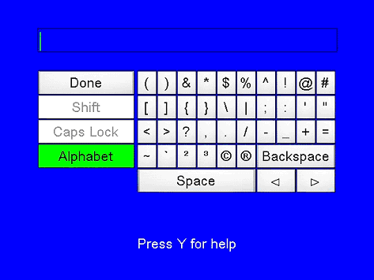
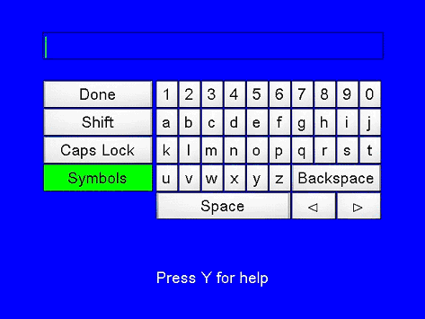
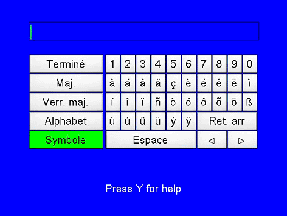

A fourth usability test was conducted to gather feedback on toggling between alphabet and symbols on the same key, wrapping the cursor from right to left and vice versa, speed of scrolling, and the delay before scrolling. New prototypes were created in Macromedia Director for this usability test, and these are the prototypes that are available in the XDK. The two prototypes used in this study were identical except for the layout of the number pad. In one version it was oriented the same as a computer keyboard, and in the other it had the same layout as a telephone.
Participants completed the same type of tasks as in previous usability tests. We decided to put the numbers across the top for this test because we needed the room horizontally for localization into the European languages. Readability was the primary concern. The letters had to be big enough to be readable and yet still fit within the text safe area (87.5%) of the screen. The third screen shot below shows the French language.This usability test also replicated the alphabet/symbols finding from the third usability test. None of the eight participants had any difficulty switching between symbols and letters.
Recommendation: The alphabet/symbols switching works well for virtual keyboards.
For this usability test we also had a single key toggle between alphabet and symbols. When the symbol mode was showing, the key would read alphabet, and when the alphabet mode was showing, it would read symbols. None of the eight participants had any difficulty switching between symbols and letters. No participants were confused by this toggle key.
Recommendation: The alphabet/symbols toggle key also works well for virtual keyboards.
 |
| Alphabet Keyboard Layout |
 |
| Symbol Keyboard Layout |
 |
| Accent Keyboard Layout |
We chose to toggle the three states between two buttons in the virtual keyboard sample and in the Xbox Dashboard virtual keyboard. If the alphabet mode is showing, the two keys read Accents and Symbols. They always show the modes that aren't currently displayed.
Participants in this usability again did not discover the controller shortcuts for the keyboard. Based on the findings in both of these usability tests, we are recommending that you provide a method for users to be able to see any controller short cut mappings.
Recommendation: The shortcuts are not discoverable without some type of on-screen documentation. We suggest that there be a message at the bottom of the keyboard telling the user to click a button for help. A dialog will appear that provides the user with the mappings. The same button used to make the dialog appear will dismiss it.
We turned off the wrapping in these prototypes so that the cursor didn't go to the left side of the keyboard from the right side. Participants indicated that they preferred to have the wrapping and expected to be able to move from the j to the Shift key, for example, by pressing to the right.
Recommendation: Enable wrapping on virtual keyboards. Users expect it to be present.
Participants liked the repeat rate and the delay before repeating used in this prototype. The repeat rate was set to 85 milliseconds and the delay before repeating was 333 milliseconds.
Recommendation: Use those timings.
This keyboard has keys to the right of the spacebar that move the cursor back and forth through the input string. The keyboard is always in insert mode, and there was no way to do a selection and type over the selection.
Recommendation: Allow users to correct an error without deleting the entire input. Overwrite also doesn't make much sense in this context.